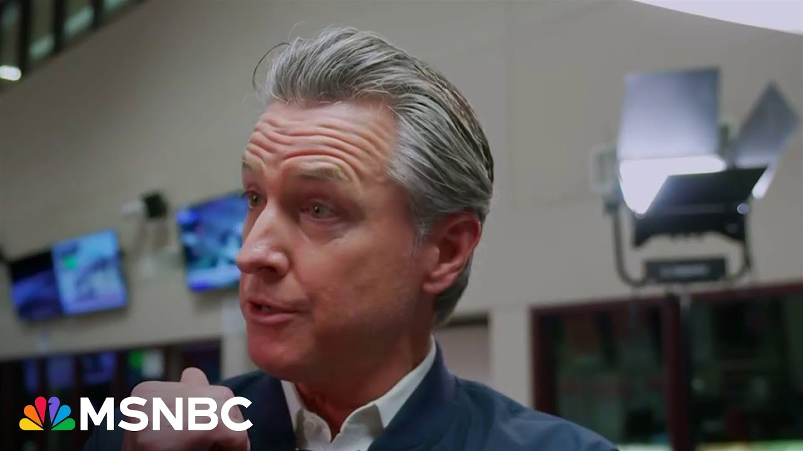

【加州州长纽瑟姆要求特朗普总统在洛杉矶抗议活动中“退让”】
Summary: Gov. Newsom criticizes Trump's immigration policies, accusing him of targeting vulnerable communities and creating chaos while failing to address real issues. He supports protesters but urges caution amid rising tensions and plans legal action against the administration.
摘要： 加州州长纽瑟姆批评特朗普的移民政策，指责其针对弱势群体、制造混乱且未能解决实际问题。他支持抗议者，但呼吁在紧张局势中保持谨慎，并计划对政府采取法律行动。

⏱️ Estimated Reading Time: 26 min
📚 六级生词 📚 雅思生词 📚 托福生词 📚 GRE生词 📚 视频里的生词
I'm inside the emergency operations center run by the county of Los Angeles here with Governor Gavin Newsome.
我正与加州州长加文·纽瑟姆一起在洛杉矶县运营的紧急行动中心。
Governor, thanks for joining us live on MSNBC.
州长，感谢您接受MSNBC的直播采访。
Good to be with you.
很高兴与您交谈。
So, this is, as I said, the emergency operations center.
正如我所说，这里是紧急行动中心。
I wonder how you would characterize the events that are unfolding in Los Angeles right now.
我想知道您如何描述洛杉矶正在发生的事件。
Is it an emergency?
这是紧急状态吗？
Is it Fox News is calling it the LA riots?
福克斯新闻称之为“洛杉矶骚乱”吗？
Is it a peaceful protest?
还是和平抗议？
What's happening?
发生了什么？
What are you seeing?
您看到了什么？
Well, I mean, look, Donald Trump has uh created the conditions you see on your TV tonight.
嗯，听着，唐纳德·特朗普制造了你们今晚在电视上看到的情况。
He's exacerbated the conditions.
他加剧了局势。
He's uh you know, lit the proverbial match.
他点燃了众所周知的导火索。
She's putting fuel on this fire uh ever since he announced he was taking over uh the National Guard in a legal act, in a moral act, an unconstitutional act, and we're going to test that theory with a lawsuit tomorrow.
自从他宣布以所谓合法、道德但违宪的方式接管国民警卫队后，他就在火上浇油，我们明天将通过诉讼验证这一说法。
Well, I was going to ask you that.
我正想问您这个问题。
Sorry to interrupt you, but but Governor, so that's news.
抱歉打断您，但州长，这是个新闻。
If you're going to sue the administration, um tell me a little bit about it.
如果您要起诉政府，请简要说明。
Give us a preview of this law.
给我们透露一下诉讼内容。
Well, under his executive order and specifically notes and under what the DoD did is they had to coordinate with the governor of the state.
根据他的行政命令和国防部的行动，他们必须与州长协调。
They never coordinate with the governor of the state.
但他们从未与州长协调。
I've worked with the National Guard.
我曾与国民警卫队合作。
We've deployed the National Guard.
我们部署过国民警卫队。
We did three plus thousand folks have been doing logistics work and fire recovery work when they were fighting the fires, the rattlesnake teams.
我们曾部署3000多人参与物流和火灾恢复工作，包括响尾蛇消防队。
Uh we did the same back in George Floyd.
我们在乔治·弗洛伊德事件中也这样做过。
We have no problem working collaboratively in a mutual aid system with local law enforcement, but there's a protocol.
我们与地方执法部门在互助体系中合作没有问题，但需要遵守程序。
There's a process.
有既定流程。
He didn't care about that.
他根本不在乎这些。
And the worst part, he completely lied.
最糟糕的是，他完全在撒谎。
He said in a tweet that everything's now safe, everything's fine.
他在推文中声称一切安全、一切正常。
Is that the case, Mr. Trump?
真是这样吗，特朗普先生？
He said because he deployed the National Guard.
他说因为部署了国民警卫队。
The guard hadn't even been deployed when he said this.
但他说这话时警卫队甚至还未部署。
It's Orwellian.
这简直是奥威尔式的谎言。
Simply lying to people.
纯粹是对民众撒谎。
Unconstitutional, illegal act.
这是违宪和非法的行为。
His mess.
他制造的烂摊子。
We're trying to clean it up.
我们正在努力收拾。
You're saying that the president of United States has made the situation on the ground here in Los Angeles uh less safe.
您是说美国总统让洛杉矶的现场局势更加危险？
What do you know about immigration enforcement today?
您对今天的移民执法行动了解多少？
Has there been any ICE raids in the city today?
今天城市里有ICE突袭行动吗？
Um are they coordinating with you on that at all?
他们与您协调过吗？
They give you a heads up?
他们提前通知您了吗？
Of course, they're not coordinating.
当然没有协调。
Um that said, we were told in just a recent briefing just a few minutes ago, there was small activity uh in the county, not in the city proper.
不过我们几分钟前刚获悉，县内（非市区）有小规模行动。
Uh but look, you you you made a point a moment ago.
但您刚才提到一点。
These images are unacceptable.
这些画面令人无法接受。
These kids on the car, uh the folks that are taking advantage of this, these aren't peaceful protesters.
车上的孩子、趁机闹事者——这些人不是和平抗议者。
A lot of these folks, a lot of great people out there doing the right thing, but you get these surgeon groups coming in, sort of these anarchists that are in there to create real problems and they're just playing right into Donald Trump's hand and they need to be called out.
许多人在做正确的事，但有些极端团体和无政府主义者制造事端，正中特朗普下怀，必须予以谴责。
They need to be arrested.
他们应该被逮捕。
It is wrong to destroy other people's property and it is wrong to create the conditions that only exacerbate this.
破坏他人财产和加剧局势都是错误的。
But Donald Trump at the end of the day is the sponsor of these conditions.
但归根结底，唐纳德·特朗普是这些乱象的推手。
Let me give you the opportunity.
请允许我问您。
You mentioned that there are people out there causing mischief and mayhem.
您提到有人制造骚乱。
Um what's your message to those people who are out there tonight?
您想对这些人说什么？
Not the peaceful protesters that are out there protesting for um the rights of immigrants, but for the people that are doing damage to buildings, to law enforcement out there.
不是为移民权利和平抗议的人，而是破坏建筑、攻击执法者的人。
Well, they're doing more more than damage to buildings and um and to property.
他们的破坏远超建筑和财产。
They're potentially damaging the very foundation of our, you know, republic.
他们可能损害我们共和国的根基。
Uh you know, democracy is in the balance.
民主正在天平上摇摆。
I mean, you're seeing these authoritarian tendencies now are being acted out by this administration, and we're case in point as it relates to nationalizing, federalizing the National Guard, threatening now to put in Marines.
本届政府正在展现威权倾向，比如联邦化国民警卫队、威胁部署海军陆战队。
So, I hope these people would pause and just consider.
希望这些人能停下来思考。
Now, some of them, they want that kind of chaos.
有些人渴望混乱。
Some ways, they're adjacent to where Donald Trump is.
某种程度上，他们与特朗普立场相近。
But the peaceful protesters, we want to keep them safe.
但我们要保护和平抗议者的安全。
We want them to exercise their fundamental rights.
保障他们行使基本权利。
Uh we want to keep those that are enforcing the laws in a respectful and responsible way also safe.
也要保护依法执法的执法人员。
But Donald Trump needs to pull back.
但特朗普必须收手。
He needs to stand down.
他必须退让。
Donald Trump is inflaming these conditions.
特朗普正在激化局势。
This is Donald Trump's problem right now.
这是特朗普造成的问题。
And if he can't solve it, we will.
如果他解决不了，我们会解决。
He continues to, as always, hit you hard publicly.
他继续公开抨击您。
Just 10 minutes ago, he put out another truth social telling you and the mayor to apologize to the people of Los Angeles.
10分钟前他又在Truth Social要求您和市长向洛杉矶民众道歉。
You guys go at it pretty hard publicly, but I know you talk privately.
你们公开交锋激烈，但我知道你们有私下对话。
Have you spoken in the last couple of days to the president about any of this?
最近几天您与总统讨论过这些吗？
Yeah, we No.
没有。
Well, we we talked for almost 20 minutes and he barely this issue never came up.
我们通话近20分钟，他几乎没提这事。
I kept trying to talk about LA.
我一直想谈洛杉矶。
He wanted to talk about all these other issues.
他却只想谈其他问题。
We had a very decent conversation.
谈话很礼貌。
When was this?
什么时候？
This was late Friday night.
上周五深夜。
I think about 1:30 plus his time after the protest had started.
抗议开始后，大约他那边凌晨1:30。
after the protest and he never once brought up the National Guard.
他从未提及国民警卫队。
He's a stone-cold liar.
他是个冷血骗子。
He said he did.
他声称提过。
Stone cold liar.
彻头彻尾的骗子。
Never did.
根本没有。
Was a very civil conversation.
谈话非常客气。
I've always wanted to approach engagement with the president of the United States in a respectful and responsible way.
我一向以尊重负责的态度与总统沟通。
But there's no working with the president.
但无法与他合作。
There's only working for him.
只能为他工作。
And I will never work for Donald Trump.
而我绝不会为特朗普工作。
Did you mention at all to him in that phone call on Friday night um the types of raids that were happening in your state on Friday?
周五通话时，您提到加州发生的突袭行动吗？
You know, there are reports that and video of um enforcement operations happening in ways that they haven't traditionally.
有报道和视频显示执法方式异常。
ICE officers going to Home Depot around Los Angeles and picking off um day laborers.
ICE官员在洛杉矶家得宝围捕日结工人。
Did you bring that up with him?
您向他提出过吗？
I we the conversation started with the frame of what's happening in LA.
谈话以洛杉矶事件开头。
He immediately pivoted to other interests and other things.
他立即转向其他话题。
You think he was aware of what was happening in Los Angeles?
您认为他知道洛杉矶的情况吗？
I I think I'm more than aware and obviously he was setting this up to take these additional steps.
他显然在策划进一步行动。
this was a setup and well I'm not saying he was setting things up not saying it was a setup but clearly they were in the process of moving to these next steps because out of nowhere just few hours after that conversation he moves to pull the trigger under this uh this this construct under uh title 10 and uh and then created and exacerbated the conditions that are persisting today.
几小时后他突然启动《标题10》授权，加剧了当前局势。
This is your authority normally to deploy the national guard here.
通常这是您部署国民警卫队的权限。
You did it.
您曾这样做过。
We were together after the fires and those National Guard troops have been out uh all across Los Angeles working to rebuild and recover this city.
火灾后我们共同部署警卫队参与重建。
How did you find out that the president of the United States was going to usurp your authority and deploy your National Guard here in California?
您如何得知总统要越权部署加州国民警卫队？
I I just I got a call from a staffer.
工作人员来电告知。
No heads up whatsoever.
毫无预警。
And again, we're here to support local law enforcement.
我们本是为支持地方执法。
There's a mutual aid process.
本有互助程序。
Local law enforcement had no needs.
地方并无需求。
They were not requesting any additional resources.
未请求额外资源。
I've got a hundred now.
我现在有100名...
I have 175 CHP officers, technically trained officers, tactical teams to address Donald Trump's mess.
175名加州公路巡警战术队员来收拾特朗普的烂摊子。
Uh we are here to support local law enforcement, uh the sheriff's office, LAPD.
我们支持警长办公室和LAPD。
Uh but they didn't need that support.
但他们不需要这种支持。
He made this up.
这是他编造的。
This is a manufactured crisis in order to get under the intent to start to stretch credul and to begin the process of moving inevitably towards a constitutional questioning crisis around posy commitatus and it's I think inevitable that's where he's going.
这是人为制造的危机，最终将引发对《地方保安队法》的宪法危机。
Tom Hol the borders are said to me yesterday he he did not rule out literally arresting you nor mayor bass if you interfere in his you hadn't yet.
汤姆·霍尔昨天称不排除逮捕您或巴斯市长。
He's a tough guy.
他自称硬汉。
Why doesn't he do that?
为何不动手？
and he knows where to find me.
他知道我在哪。
But you know what?
但听着：
Lay your hands off four-year-old girls that are trying to get educated.
别碰想上学的四岁女孩。
Lay your hands off these poor people that just trying to get live their lives, man.
别打扰努力生活的普通人。
Trying to live their lives, paying their taxes.
他们纳税谋生。
Been here 10 years.
已在此十年。
The fear, the horror.
恐惧与绝望。
The hell is this guy?
这人算什么？
Come after me.
冲我来。
Arrest me.
逮捕我。
Let's just get it over with.
来个痛快。
Tough guy.
硬汉？
You know, I don't give a damn.
我根本不在乎。
But I care about my community.
但我在乎我的社区。
I care about this community.
在乎这里的人们。
the hell are they doing?
他们到底在干什么？
These guys need to grow up.
这些人该成熟点了。
They need to stop and we need to push back.
必须停止，我们必须反击。
And I'm sorry to be so clear, but uh that kind of bloiating is exhausting.
抱歉直言，但这种虚张声势令人疲惫。
So Tom, arrest me.
汤姆，来抓我啊。
Let's go.
放马过来。
The perception is there's a lot of uh theatrics happening out there.
外界认为这充满表演性质。
Mayor Bass told me that she spoke directly to Tom Hman.
巴斯市长说她直接联系过汤姆·霍尔。
Has he reached out to you?
他联系过您吗？
Have you reached out to him?
您联系过他吗？
No.
没有。
No communication whatsoever.
毫无沟通。
No, it's direct communication um and back and forth with Susie Wilds um and uh and with the president uh in a phone conversation.
只与苏茜·怀尔德斯和总统通过电话。
Um there obviously are pockets of violence uh out there on the streets.
街头显然有零星暴力。
How concerning is the violence in Los Angeles tonight?
您对今晚暴力有多担忧？
How how widespread is it too?
范围有多广？
You're monitoring it.
你们在监控吗？
Yeah, we're monitor I mean I think that's self-evident.
当然，这不言而喻。
Uh we're here with LAPD.
我们与LAPD合作。
We were here with mayor.
与市长协作。
We're here with uh the sheriff department u my national guard uh that we're still uh working in command with uh and others monitoring this situation in real time providing whatever resources we possibly need.
与警长部门、国民警卫队实时监控，提供所需资源。
We're calling out the violence.
我们谴责暴力。
Period.
坚决地。
Full stop.
毫无余地。
It's wrong.
这是错误的。
Uh and we're calling for the president of the United States to rescend his order so that he can clean up his own mess.
我们要求总统撤销命令，收拾自己的烂摊子。
Stephen Miller, other people have used the word insurrection about the activity on the streets of Los Angeles.
斯蒂芬·米勒等人称洛杉矶街头活动是"叛乱"。
Yeah, this I mean this is just they're trying to incite violence.
他们试图煽动暴力。
They're trying to impose the kind of rhetoric that only makes conditions worse that quite literally put people's lives at risk and they're intentionally and knowingly doing that.
用言论恶化局势，蓄意危及生命。
All of this is about immigration enforcement and the type of of Well, go ahead.
这一切都关于移民执法...您请继续。
Feel free to No, I mean I know I don't mean even to cut you off.
不，我不是要打断您。
I think it's about something much more.
这关乎更严重的事。
This is about authoritarian tendencies.
这是威权倾向。
This is about command and control.
关乎命令与控制。
This is about power.
关乎权力。
This is about ego.
关乎自我。
My way or the highway.
顺我者昌。
This is a consistent pattern of practice of recklessness.
一贯的鲁莽行径。
This guy has abandoned the core principles of this great democracy.
他抛弃了民主核心原则。
He's threatening to what?
他威胁要做什么？
Go after judges he disagrees with, cut off funding to institutions of higher learning.
打压异见法官，切断高校资金。
He's on a cultural binge.
沉迷文化战争。
He's rewriting history, censoring and historical facts.
篡改历史，审查事实。
I mean, it's this is all this is something completely different and this is part of that ongoing play that is unfolding in front of our eyes.
我是说，这一切完全不同，这是正在我们眼前上演的持续戏剧的一部分。
It is a serious moment under the guise of immigration, but it's much deeper than that.
这是一个以移民为幌子的严肃时刻，但其意义远不止于此。
You, you know, I've reported with uh and about you throughout your tenure here.
你知道，我在你整个任期内都报道过你。
I've not seen you um as angry as I feel like I've seen you here.
我从未见过你像现在这样愤怒。
Do you think that there's a way out of this?
你认为有办法摆脱这种局面吗？
Where does where does this go from here?
接下来会怎样发展？
What happened?
发生了什么？
He needs to stand out.
他需要站出来。
The president of United States needs to stand down.
美国总统需要退让。
He needs to resend this order and we'll we'll work together to clean up his mess.
他需要撤销这项命令，而我们将共同努力收拾他的烂摊子。
Did he respond?
他有回应吗？
You asked for him to resend the order earlier today.
你今天早些时候要求他撤销命令。
Did they respond at all?
他们有任何回应吗？
Of course not.
当然没有。
Nothing.
毫无回应。
No.
没有。
There's more lies uh and statements.
还有更多谎言和声明。
Look, again, you've seen me out there in the tarmac with the president.
你看，你曾看到我和总统在停机坪上。
We had a very cordial conversation on Friday night.
周五晚上我们进行了非常友好的交谈。
I'm not looking to find a crowbar to put in the spokes of his wheels every day.
我并不想每天找机会阻挠他。
Yeah, we'll stand tall and firm in terms of defending our values, but I want to find areas where we can work together, but you go after vulnerable communities.
是的，我们会坚定捍卫我们的价值观，但我想找到我们可以合作的领域，而你却针对弱势群体。
You go after kids.
你针对孩子。
I was just down in Compton School District 3 days ago, and they were talking to me about this four-year-old kid.
我三天前刚去过康普顿学区，他们向我提到这个四岁的孩子。
They don't even know where she is.
他们甚至不知道她在哪里。
This is serious moment.
这是一个严肃的时刻。
The hell is going on?
到底发生了什么？
Threatening real people.
威胁真实的人。
These are friends.
这些是朋友。
These are people we know, members of our community, destroying industries in the state.
这些是我们认识的人，我们社区的成员，正在摧毁州内的产业。
You claim to care about ranchers and farmers.
你声称关心牧场主和农民。
You care claim about construction industry.
你声称关心建筑业。
I mean, these are the folks that you're going after in in the most univil and indecent way.
我是说，你以最不文明、最不体面的方式针对这些人。
And that's where I have a problem.
这就是我的问题所在。
Uh I have no problem going after criminals.
我对打击罪犯没有问题。
We've coordinated and collaborated with ICE over 10,000 transfers that have been part of my administration.
在我的任期内，我们与ICE协调并合作完成了超过1万次转移。
So I don't need to be lectured by these guys that we don't coordinate and collaborate on violent California state prisons does hand over ties and my legislature with respect not an indictment but I've had to veto legislation for them to try to stop me from using that authority.
所以我不需要这些人来教训我，说我们不协调合作。加州州立监狱确实移交了犯人，而我的立法机构尊重这一点，并非指控，但我不得不否决立法以阻止他们试图剥夺我的这一权力。
So when these guys say we don't go after criminals again they're lying and they are knowingly lying.
所以当这些人说我们不打击罪犯时，他们是在撒谎，而且是明知故犯。
What's your message to the people that are out there protesting for the rights of immigrants?
你对那些为移民权利抗议的人有什么话要说？
want to see those protesters continue to be out on the street and protest this these I just want them to be safe and I I just I I want folks to know that are thinking about going after I just be safe.
我希望看到这些抗议者继续走上街头抗议，但我只希望他们安全。我只想让那些考虑参与的人知道要安全。
Do you support them?
你支持他们吗？
Of course I support them.
我当然支持他们。
I love I mean protest the foundation of this democracy.
我是说，抗议是这个民主的基石。
is what makes this country great and that needs to persist and right now people need to come out but we need to be mindful of the toxicity of this moment and then we have to deal with these elements that are coming in that are intentionally trying to take advantage of this in a way that only aids and abetss Donald Trump and this is what he was counting on and we've got to push back and we've got to be careful at this moment I pray that people are cautious and careful at this moment you know we talked about this is in some lecture about immigration in some measure it's about democracy.
正是这一点让这个国家伟大，而这需要持续。现在人们需要站出来，但我们必须意识到此刻的毒性，并应对那些故意利用这一点、只为帮助和怂恿特朗普的人。这正是他所指望的，我们必须反击，同时此刻必须谨慎。我祈祷人们此刻保持警惕和谨慎。你知道，我们在某种程度上讨论移民时，也是在讨论民主。
Do you believe some people have said that this is an attempt at distraction from maybe the matters with Elon Musk back in Washington?
你是否认为有人说这是试图分散人们对华盛顿与埃隆·马斯克相关事务的注意力？
You know, why did this happen? Now, in other words, well, it's I mean, he's he's the master of distraction.
你知道，为什么会现在发生？换句话说，他是分散注意力的大师。
He's, you know, he's the commander of chaos.
他是混乱的指挥官。
That's what Donald Trump does.
这就是特朗普所做的。
Moves this direction, move that direction.
朝这个方向行动，朝那个方向行动。
I mean, look, this guy is 90 days, 90 beautiful deals.
我是说，看，这家伙90天，90笔漂亮的交易。
How many deals? Zero.
多少笔交易？零。
In the UK, what? Give me a break.
在英国？得了吧。
I mean, Elon Musk is is, you know, the the sick of a sick offense as it relates to this love relationship that he had with the president of the United States said it exactly right.
我是说，埃隆·马斯克与美国总统的这种“爱恋关系”令人作呕，他说得完全正确。
We're likely in a recession the second half of the year because the recklessness of this tariff policy under this administration.
由于本届政府的鲁莽关税政策，我们下半年很可能陷入衰退。
He's just saddled our kids and grandkids with $2.5 trillion dollars of debt to give billionaires and corporations a tax break that they're not even asking for.
他让我们的子孙背负了2.5万亿美元的债务，只为给亿万富翁和企业减税，而他们甚至没有要求。
Of course, he's trying to distract us.
当然，他试图分散我们的注意力。
I I I have a feeling there's a pretty good chance that in the White House there might be a television on and he might be watching us.
我有一种感觉，白宫里很可能开着电视，他可能正在看我们。
I hope so right now.
我希望他现在正在看。
Yeah, he could learn something.
是的，他可以学到一些东西。
What might you say to him if you you I'll give you the floor.
如果你有机会，你会对他说什么？
You have the opportunity what you weren't able to say to him on that phone call or calls that he hasn't taken today.
你有机会说出你今天未能通过电话告诉他的话。
I mean, where's your decency, Mr. President?
我是说，总统先生，你的体面在哪里？
Stop.
停下。
Rendous order.
撤销命令。
It's illegal and unconstitutional.
这是非法且违宪的。
And I said it I'll say it again.
我说过，我再说一次。
It's immoral.
这是不道德的。
You're creating the conditions that you claim you're solving and you're not.
你正在制造你声称要解决的条件，但你并没有解决。
and you're putting real people's lives at risk.
而且你正在将真实的人的生命置于危险之中。
This is a serious moment and it requires serious leadership and it's time for you to be a commander and chief of the United States of America and I will have your back.
这是一个严肃的时刻，需要严肃的领导力，是时候让你成为美利坚合众国的统帅了，我会支持你。
If you want to work in a relationship of trust and truth in the spirit of our founding fathers, but you come after poor kids, you come after families, we will do everything in our power to stand up and stand in your way.
如果你想以我们开国元勋的精神，在信任和真相的关系中合作，但如果你针对贫困儿童和家庭，我们将竭尽全力阻止你。
Governor Gavin Newsome, what time you filing the lawsuit tomorrow?
纽瑟姆州长，你明天什么时候提起诉讼？
uh very early in the morning.
嗯，明天一大早。
Um I'd love to do it tonight, but uh they uh we got lawyers working on the brief.
我本想今晚就做，但我们的律师正在准备诉状。
All right.
好的。
Uh Governor Gavin Newsome, thank you for being here live on MSNBC.
纽瑟姆州长，感谢你来到MSNBC直播。
I appreciate it.
非常感谢。
Thanks for having me.
谢谢邀请。